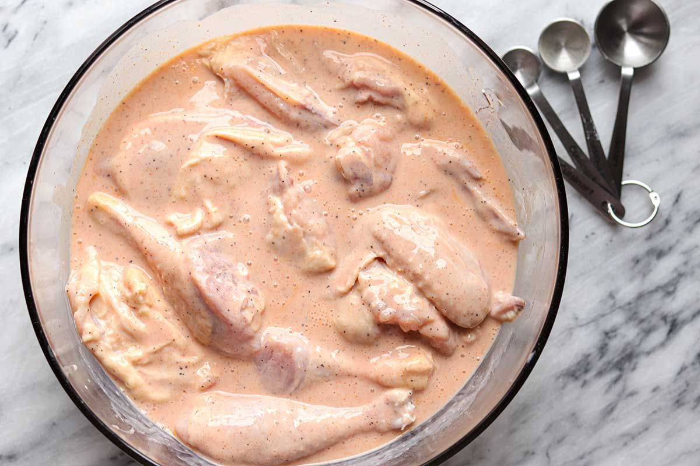
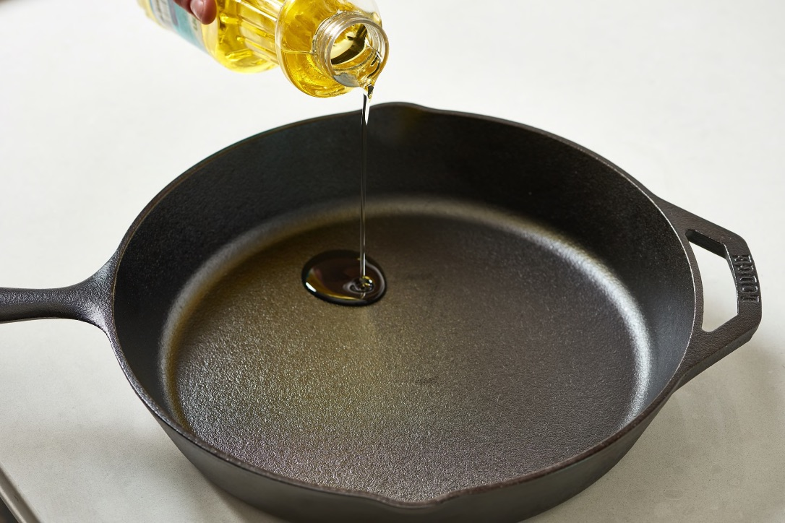
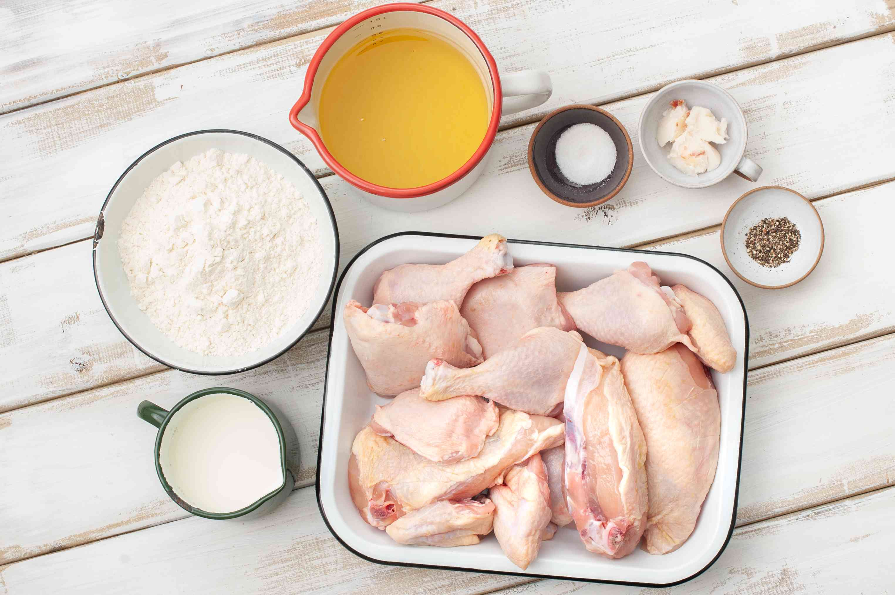
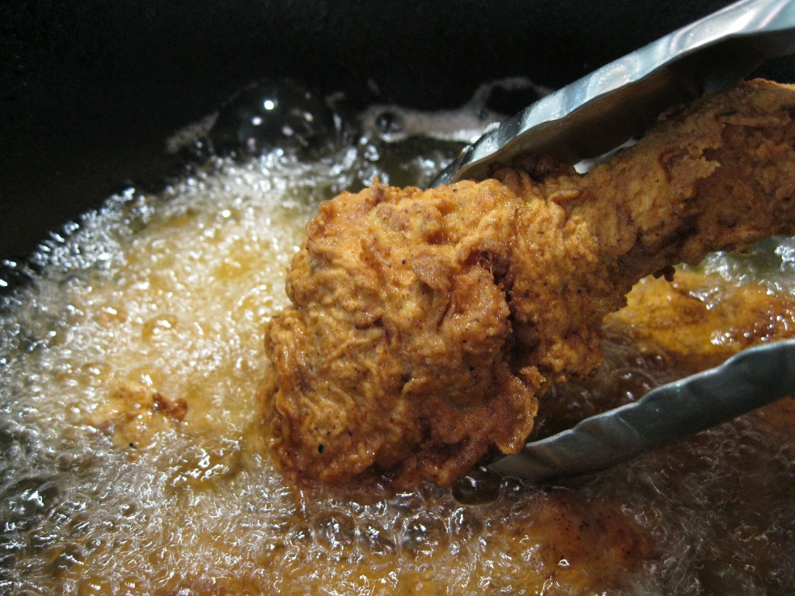
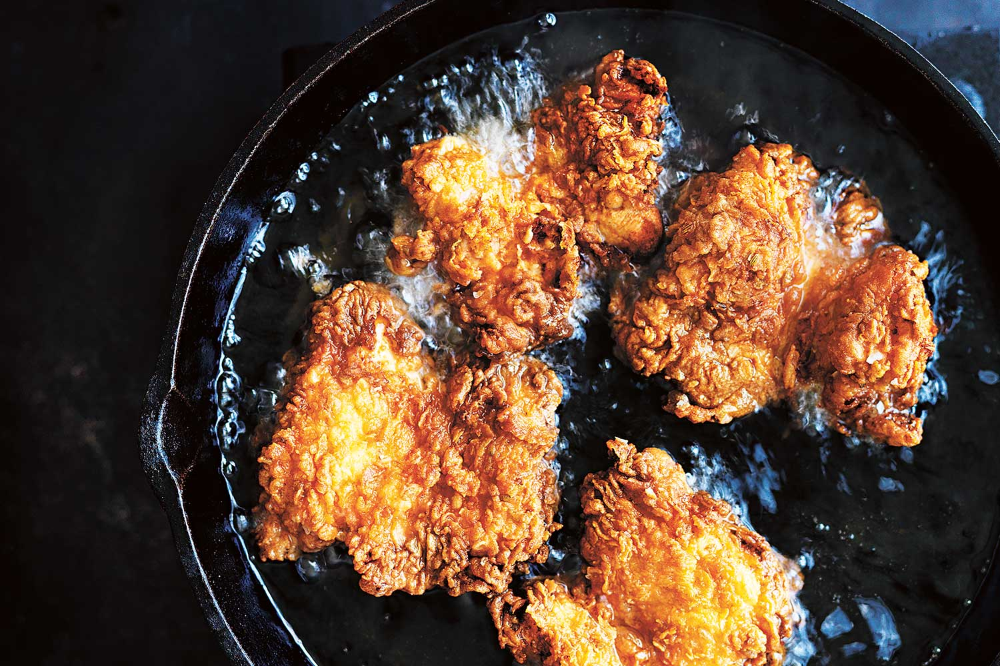

A delicious dish consisting of pieces of chicken that have been coated and fried! A famously southern delicacy.
6 chicken thighs
6 chicken drumsticks
3 cups buttermilk
2 tsp salt
3 cups all-purpose flour
1/2 cup cornstarchs
1 tbsp salt
1 tbsp paprika
2 tsp onion powder
1 qt vegetable oil for frying
1. In a large mixing bowl, whisk together buttermilk, salt, and pepper in a mixing bowl. Add in chicken pieces. Cover the bowl with plastic wrap and refrigerate 4 hours.
1. When ready to cook, pour the vegetable oil in a skillet until it is about 3/4 inch deep. Heat to 350 degrees
2. Prepare the breading by combining the flour, cornstarch, onion powder, garlic powder, oregano, basil, white pepper, cayenne pepper, paprika, and salt in a gallon sized resealable plastic bag or shallow dish. Mix it thoroughly.
3. Working one at a time, remove chicken pieces from buttermilk mixture. Shake it gently to remove the excess. Place it in the breading mix and coat thoroughly. Tap off the excess.
4. Place the breaded chicken into the 350 degree oil. Fry 3 or 4 pieces at a time. The chicken will drop the temperature of the oil so keep it as close to 350 degrees as possible. Fry each piece for 14 minutes, turning each piece about half way through, until the chicken reaches an internal temperature of 165 degrees F.
5. Remove from the oil and place on paper towels. Let them rest for at least 10 minutes before serving.